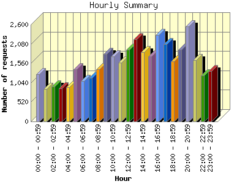
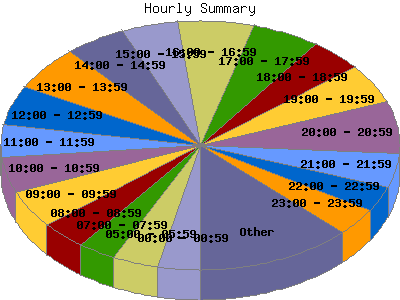

Report generated by Analog 6.0 and Report Magic 2.21
|
Web Server Statistics for "Harish Narayanan (hnarayan) - March 2008" Report generated by Analog 6.0 and Report Magic 2.21 |
The Hourly Summary identifies the level of activity broken down by each hour. Remember that one page hit can result in several server requests as the images for each page are loaded. This summary also compares the level of activity during working hours and after hours as a total for the report time frame.


| Hour | Number of requests | Number of bytes transferred | Percentage of the bytes | Percentage of the requests | |
|---|---|---|---|---|---|
| 1. | 00:00 - 00:59 | 1,267 | 43.169 MB | 3.00% | 3.38% |
| 2. | 01:00 - 01:59 | 880 | 23.357 MB | 1.62% | 2.34% |
| 3. | 02:00 - 02:59 | 940 | 42.305 MB | 2.94% | 2.50% |
| 4. | 03:00 - 03:59 | 894 | 51.043 MB | 3.54% | 2.38% |
| 5. | 04:00 - 04:59 | 926 | 37.977 MB | 2.63% | 2.47% |
| 6. | 05:00 - 05:59 | 1,395 | 44.637 MB | 3.10% | 3.72% |
| 7. | 06:00 - 06:59 | 1,088 | 35.299 MB | 2.45% | 2.90% |
| 8. | 07:00 - 07:59 | 1,164 | 40.927 MB | 2.84% | 3.10% |
| 9. | 08:00 - 08:59 | 1,401 | 58.076 MB | 4.03% | 3.73% |
| 10. | 09:00 - 09:59 | 1,812 | 78.905 MB | 5.47% | 4.83% |
| 11. | 10:00 - 10:59 | 1,737 | 85.589 MB | 5.94% | 4.63% |
| 12. | 11:00 - 11:59 | 1,586 | 67.790 MB | 4.70% | 4.22% |
| 13. | 12:00 - 12:59 | 1,930 | 204.076 MB | 14.16% | 5.14% |
| 14. | 13:00 - 13:59 | 2,212 | 67.994 MB | 4.72% | 5.89% |
| 15. | 14:00 - 14:59 | 1,863 | 43.187 MB | 3.00% | 4.96% |
| 16. | 15:00 - 15:59 | 1,743 | 51.753 MB | 3.59% | 4.64% |
| 17. | 16:00 - 16:59 | 2,313 | 108.062 MB | 7.50% | 6.16% |
| 18. | 17:00 - 17:59 | 2,066 | 75.039 MB | 5.21% | 5.50% |
| 19. | 18:00 - 18:59 | 1,614 | 39.777 MB | 2.76% | 4.30% |
| 20. | 19:00 - 19:59 | 1,930 | 88.782 MB | 6.16% | 5.14% |
| 21. | 20:00 - 20:59 | 2,547 | 43.878 MB | 3.04% | 6.78% |
| 22. | 21:00 - 21:59 | 1,652 | 44.283 MB | 3.07% | 4.40% |
| 23. | 22:00 - 22:59 | 1,234 | 24.979 MB | 1.73% | 3.29% |
| 24. | 23:00 - 23:59 | 1,349 | 40.731 MB | 2.83% | 3.59% |
| Work Hours (8:00am-4:59pm) | 16,597 | 765.434 MB | 53.10% | 44.21% | |
| After Hours (5:00pm-7:59am) | 20,946 | 676.183 MB | 46.91% | 55.79% | |
This report was generated on May 20, 2008 21:39.
Report time frame March 1, 2008 00:00 to March 31, 2008 23:58.
| Web statistics report produced by: | |
 Analog 6.0 Analog 6.0 |  Report Magic 2.21 Report Magic 2.21 |